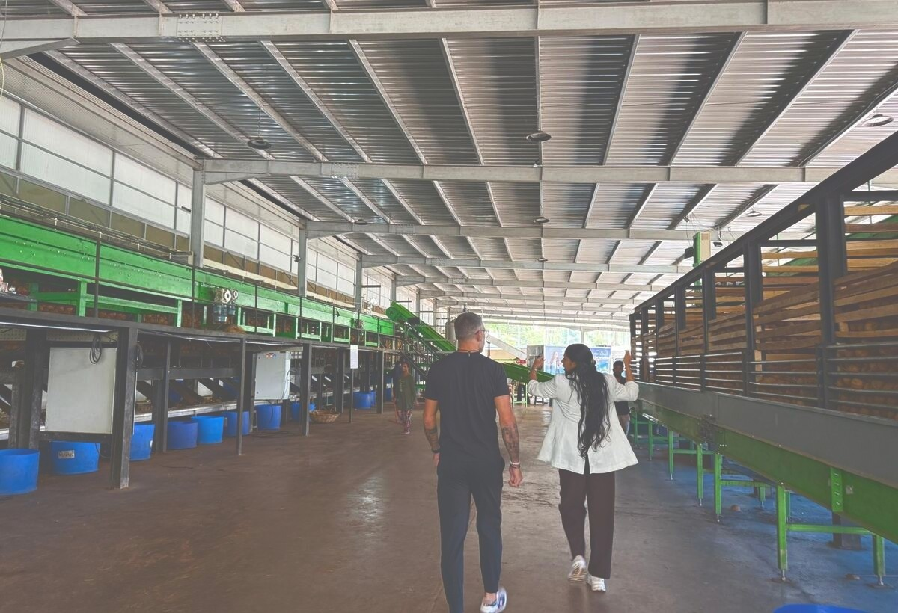
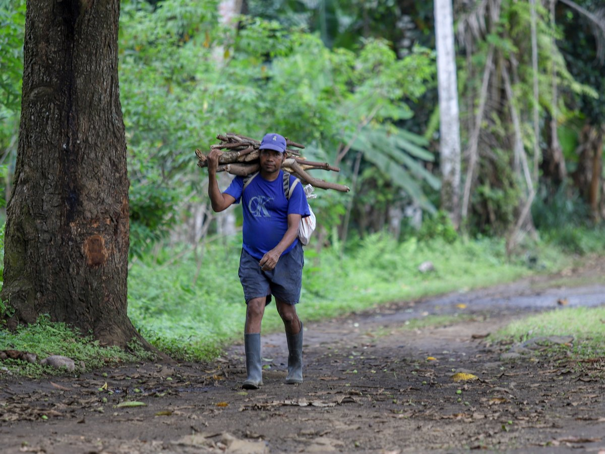
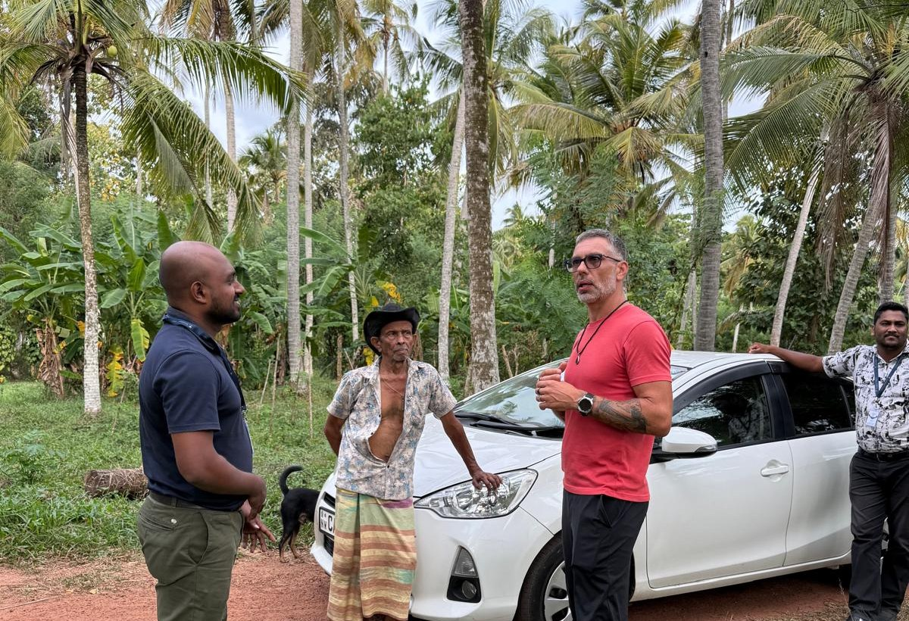

De l'origine au marché, nous construisons et maîtrisons des filières intégrées, bio et tracées. Pour transformer des matières premières d'exception en produits adaptés aux besoins de nos clients.
C'est cette lecture, de l'origine jusqu'au marché, qui fait de Valúdo un partenaire et pas un simple fournisseur. Nous relions trois dimensions trop souvent traitées séparément.

Nous construisons et sécurisons les filières à l'origine pour garantir qualité, traçabilité et fiabilité des approvisionnements.

Nous maîtrisons les enjeux de transformation, de qualité, de format et de conformité pour répondre aux spécifications attendues.
Nous construisons des offres adaptées aux usages, aux attentes clients et aux réalités de chaque marché.
Nous accompagnons industriels, distributeurs et marques dans la construction d'approvisionnements et de produits adaptés à leurs marchés.
Sécuriser votre approvisionnement avec des filières fiables et tracées, des formats industriels adaptés et une disponibilité en Europe.
En savoir plus →Structurer une offre adaptée à votre marché, de l'ingrédient au produit fini en marque propre ou marque blanche.
En savoir plus →Des matières choisies pour leur origine, leurs propriétés et leur potentiel de valorisation dans vos formulations.
En savoir plus →Huiles vierges et désodorisées, eau de coco, farine, sucre de coco, coco râpée, chips, lait, poudre et autres ingrédients issus de la noix de coco.
Découvrir la gamme Coco →Beurres et ingrédients issus de nos filières africaines, pour applications alimentaires et cosmétiques.
Découvrir la gamme Karité →Un besoin spécifique ? Vous recherchez une autre matière ou une origine particulière ? Nous développons également des solutions de sourcing sur mesure, avec les mêmes exigences de qualité, de traçabilité et de maîtrise de la filière.
Nous consulter →Nous sommes présents à l'origine, aux côtés des producteurs et des partenaires de transformation, pour maîtriser la matière jusqu'au produit livré.

Là où le prix des brokers suit le trading et varie fortement selon les saisons, notre logique de filière peut nous permettre, selon les produits et les origines, de construire des engagements de prix à moyen terme et de réduire l'exposition à la volatilité des marchés.
Depuis 2014, Valúdo construit ses filières au contact des producteurs, des collecteurs et des partenaires de transformation. De São Tomé aux nouvelles origines africaines et asiatiques, nous appliquons la même exigence de qualité, de traçabilité et d'impact.


Des filières intégrées, construites avec nos partenaires locaux et suivies selon les standards Valúdo.
Valúdo est membre du Groupe Duval, entreprise à mission engagée depuis plus de 30 ans dans le développement économique et social des territoires, notamment sur le continent africain.


 Engagement propre Valúdo
Engagement propre Valúdo
Certifications disponibles selon les filières et les produits. Certificats à jour disponibles sur demande.